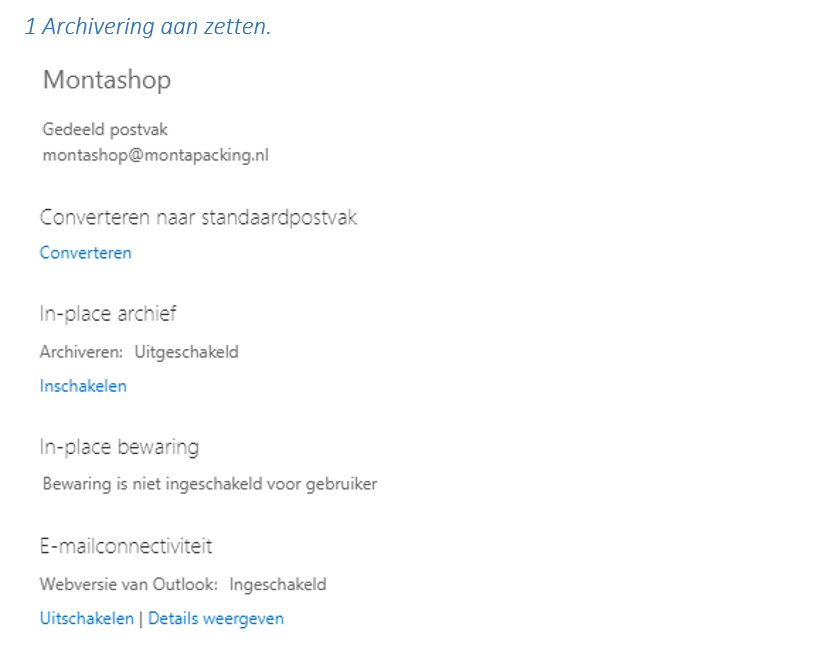
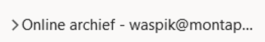
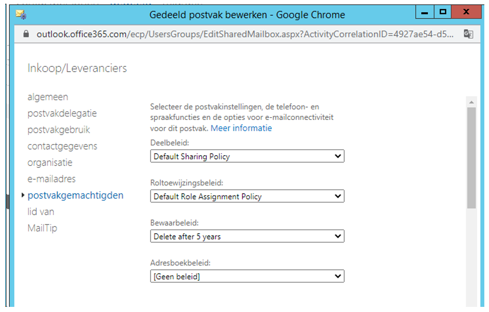
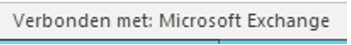
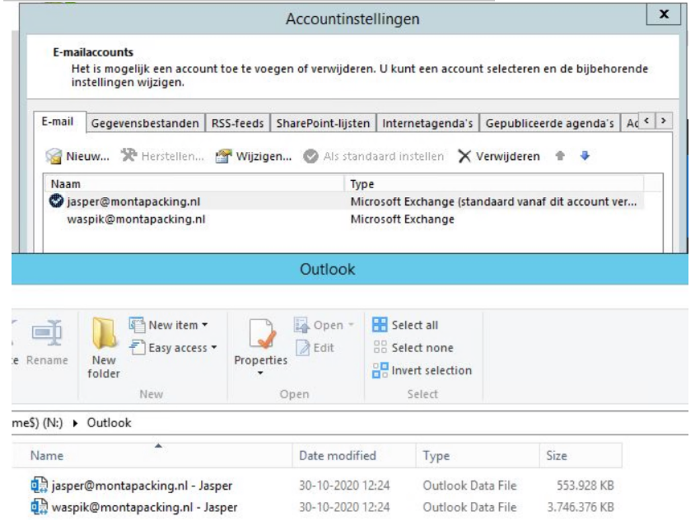

Snelheid gedeelde mailbox verbeteren
Algemeen
Gedeelde Mailboxen kunnen na verloop van tijd een behoorlijke omvang bereiken en, omdat ze online benaderd worden, traag gaan reageren.
Je ziet dan een bericht dat Echange bezig is om gegevens op te halen of Outlook hangt enige tijd.
Sommige gedeelde mailboxen worden al jaren gebruikt en kunnen wel 50GB groot zijn.
Als Outlook op een RDS-server wordt gebruikt is belangrijk dat de RDS-server een snelle verbinding heeft naar het internet (medio oktober 2020 zijn dat de 1GB-A2B-verbinding en de 1GB-OpenFiber-verbinding).
Verder zijn er nog een aantal manieren om dit te verbeteren, waarbij het aanzetten van de caching van een mailbox per persoon de beste resultaten geeft (maar bij meerdere mensen ook het meest bewerkelijk is).
Archivering gedeelde mailbox
Door archivering aan te zetten wordt alles, ouder dan 2 jaar, in een archief gezet. De mailbox waarin vooral gewerkt wordt bevat dan nog maar items van 2 jaar en jonger en is daarmee veel kleiner.

In het geval van Waspik (in gebruik sinds begin Efulfilment) kwam 18GB van de 45GB in het Online archief terecht.

Het kan overigens wel een aantal dagen duren voordat er items in het online-archief verschijnen.
Items ouder dan 5 jaar verwijderen
Als men geen archivering wil dan kun je aanbieden om alle items ouder dan x jaar te verwijderen. Medio okt 2020 is dit ingeschakeld voor de Opdrachtgevers-mailbox:

Caching mailbox aanzetten
Bij persoonlijke mailboxen staat caching ingeschakeld, hierbij worden items in de ost-file in N:\Outlook opgeslagen.
Dit is te zien in Outlook, er staat dan onderin :

en niet
Caching staat standaard uit bij gedeelde mailboxen. Het is aan te zetten (zie de bijlage), maar dit is niet aan te bevelen. (Bij een test in Breda bleek het niet werkbaar).
Er is een andere manier om dit te doen die wel goed werkt, maar waarbij er per persoon een instelling gezet moet worden:
Maak een "beveiligingsgroep met e-mail" aan binnen Exchange, zie als voorbeeld "Shared-Waspik".
Vink aan "Deze groep verbergen in adressenlijsten.
Voeg deze groep toe bij postvakdelegatie van de gedeelde mailbox.
Voor “verzenden als” werkt iets dergelijks.
Voeg de betreffende persoon aan deze groep toe.
Let op : Het toevoegen werkt alleen op de werkplek, niet lokaal.
Voeg vervolgens de mailbox weer toe via accountinstellingen - nieuw.

Gebruik bij het aanmelden de credentials van de gebruiker.
De ost-file wordt aangemaakt en na verloop van tijd is het bijwerken klaar.
De gebruiker heeft de gedeelde mailbox nu even dubbel.
Haal de persoon weg bij de postvakdelegatie van de gedeelde mailbox.
Na verloop van tijd verdwijnt een van de dubbele gedeelde mailbox bij de gebruiker (die daar via automapping terecht gekomen is).
Het zoeken is nu snel.